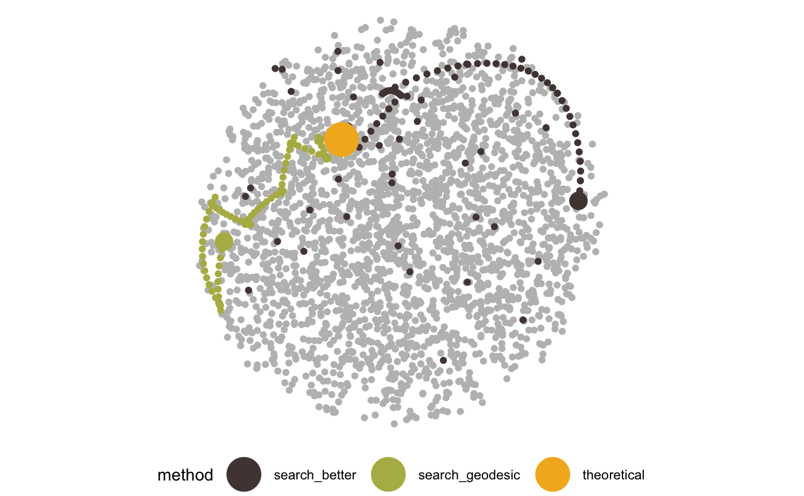

The set of functions returns a primary ggplot object
that plots the data object in a space reduced by PCA.
compute_pca() computes the PCA and explore_space_pca() does the plotting.`
flip_sign(dt, group = NULL, ...) compute_pca(dt, group = NULL, random = TRUE, flip = TRUE, ...) explore_space_pca( dt, details = FALSE, pca = TRUE, group = NULL, color = NULL, ..., animate = FALSE )
| dt | A data object from the running the optimisation algorithm in guided tour |
|---|---|
| group | The grouping variable, useful when there are multiple algorithms in the data object |
| ... | different argument passed to |
| random | Boolean, if the random data from the high dimensional sphere should be bounded |
| flip | boolean, if the sign flipping need to be computed |
| details | if all the components of the optimisers should be shown. With |
| pca | Boolean, if |
| color | A variable from the object that the diagnostic plot should be coloured by |
| animate | Boolean, if the plot should be animated |
Other plot:
explore_trace_interp(),
explore_trace_search(),
prep_space_tour()
#>#> List of 3 #> $ basis: num [1:495, 1:5] -0.341 -0.338 -0.344 -0.335 -0.347 ... #> ..- attr(*, "dimnames")=List of 2 #> $ flip : logi TRUE #> $ dt : tibble [495 × 8] (S3: tbl_df/tbl/data.frame)#>#> $pca_summary #> Standard deviations (1, .., p=5): #> [1] 1.0433992 1.0155630 0.9888052 0.9850722 0.9653222 #> #> Rotation (n x k) = (5 x 5): #> PC1 PC2 PC3 PC4 PC5 #> V1 0.5494898 -0.2012644 0.5927758 0.12915854 -0.5380414 #> V2 -0.3674142 0.5045363 0.1443116 0.73291782 -0.2290317 #> V3 -0.4473056 -0.4083083 0.6605713 0.06397122 0.4390390 #> V4 0.1028552 -0.6665882 -0.4230460 0.60415355 0.0333405 #> V5 0.5936381 0.3063988 0.1116634 0.27758911 0.6813143 #> #> $aug #> # A tibble: 2,995 x 14 #> basis index_val info method alpha tries loop id row_num PC1 PC2 #> <lis> <dbl> <chr> <chr> <dbl> <dbl> <dbl> <dbl> <int> <dbl> <dbl> #> 1 <dbl… 0.749 new_… PD 0.5 1 1 1 1 -1.83 -0.617 #> 2 <dbl… 0.749 dire… PD NA 2 1 2 2 -1.84 -0.628 #> 3 <dbl… 0.749 dire… PD NA 2 1 3 3 -1.83 -0.606 #> 4 <dbl… 0.749 dire… PD NA 2 1 4 4 -1.83 -0.607 #> 5 <dbl… 0.749 dire… PD NA 2 1 5 5 -1.83 -0.627 #> 6 <dbl… 0.749 dire… PD NA 2 1 6 6 -1.83 -0.596 #> 7 <dbl… 0.749 dire… PD NA 2 1 7 7 -1.83 -0.637 #> 8 <dbl… 0.749 dire… PD NA 2 1 8 8 -1.82 -0.627 #> 9 <dbl… 0.749 dire… PD NA 2 1 9 9 -1.84 -0.607 #> 10 <dbl… 0.749 best… PD NA 2 1 10 10 -1.83 -0.635 #> # … with 2,985 more rows, and 3 more variables: PC3 <dbl>, PC4 <dbl>, PC5 <dbl> #>dplyr::bind_rows(holes_1d_geo, holes_1d_better) %>% bind_theoretical(matrix(c(0, 1, 0, 0, 0), nrow = 5), index = tourr::holes(), raw_data = boa5 ) %>% explore_space_pca(group = method, details = TRUE) + scale_color_discrete_botanical()#>#>